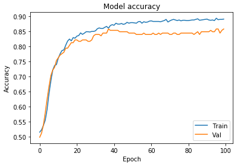
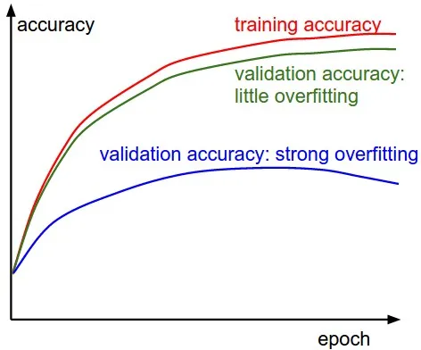
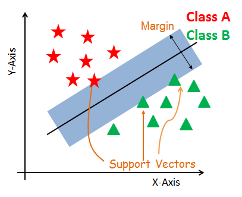
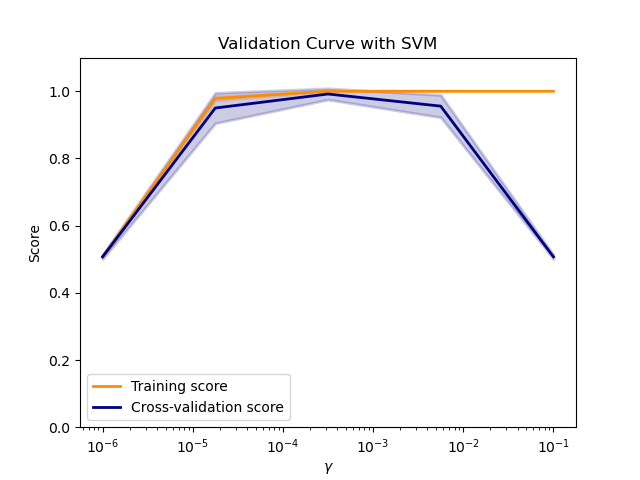
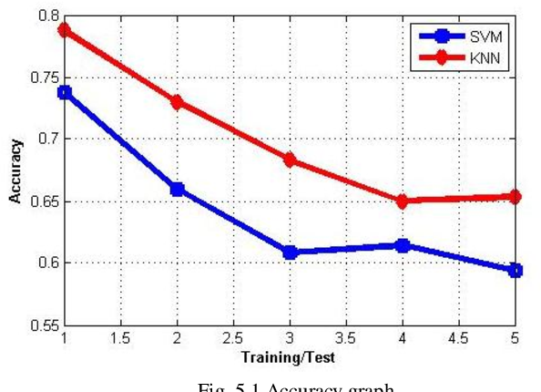

Deep Learning
Nurel Network (MPL Classifier)

Nurel Network:
Neural networks, also known as artificial neural networks (ANNs) or simulated neural networks (SNNs), are a subset of machine learning and are at the heart of deep learning algorithms. Their name and structure are inspired by the human brain, mimicking the way that biological neurons signal to one another.
Accuracy Based on Model :
The nurel networkl with an average accuracy of 71.9% can be improved way lot by trainig it with database. The most common datasets for SER is RAVDESS,IEMOCAP.,etc.
Working based on new data :
When the system gets new dataset values it will predict based on the model but, it won't leave the dataset as outlierMechine Learning
SVM

Support Vector Machine or SVM
is one of the most popular Supervised Learning algorithms, which is used for Classification as well as Regression problems. However, primarily, it is used for Classification problems in Machine Learning.
Accuracy Based on Model :
The performance has been improved in terms of accuracy for the SVM algorithm with 91%